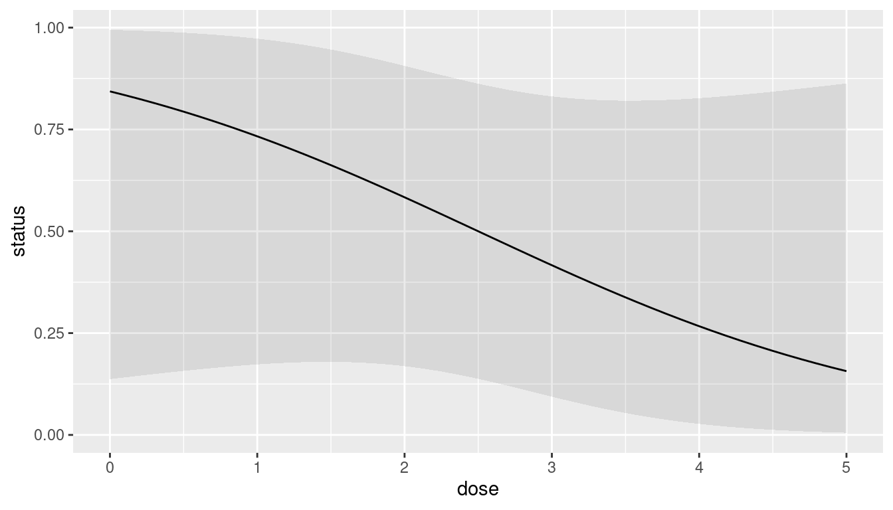
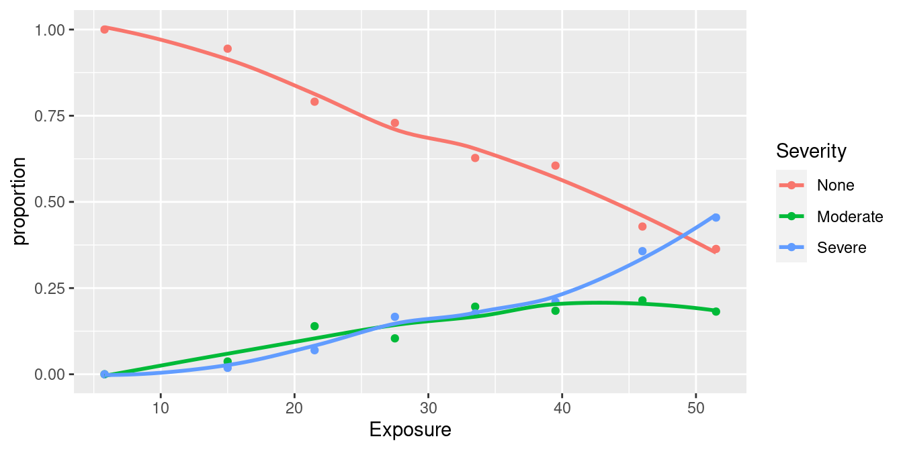
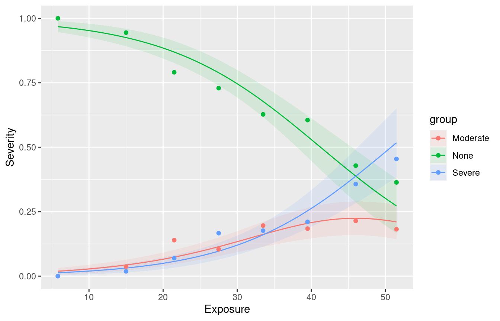

glm(y ~ x, family="binomial")Logistic Regression
Logistic regression
When response variable is measured/counted, regression can work well.
But what if response is yes/no, lived/died, success/failure?
Model probability of success.
Probability must be between 0 and 1; need method that ensures this.
Logistic regression does this. In R, is a generalized linear model with binomial “family”:
- Begin with simplest case.
Packages
library(MASS)
library(tidyverse)
library(marginaleffects)
library(broom)
library(nnet)
library(conflicted)
conflict_prefer("select", "dplyr")
conflict_prefer("filter", "dplyr")
conflict_prefer("rename", "dplyr")
conflict_prefer("summarize", "dplyr")The rats, part 1
- Rats given dose of some poison; either live or die:
dose status
0 lived
1 died
2 lived
3 lived
4 died
5 diedRead in:
my_url <- "http://ritsokiguess.site/datafiles/rat.txt"
rats <- read_delim(my_url, " ")
rats# A tibble: 6 × 2
dose status
<dbl> <chr>
1 0 lived
2 1 died
3 2 lived
4 3 lived
5 4 died
6 5 died Basic logistic regression
- Make response into a factor first:
rats2 <- rats %>% mutate(status = factor(status))- then fit model:
status.1 <- glm(status ~ dose, family = "binomial", data = rats2)Output
summary(status.1)
Call:
glm(formula = status ~ dose, family = "binomial", data = rats2)
Coefficients:
Estimate Std. Error z value Pr(>|z|)
(Intercept) 1.6841 1.7979 0.937 0.349
dose -0.6736 0.6140 -1.097 0.273
(Dispersion parameter for binomial family taken to be 1)
Null deviance: 8.3178 on 5 degrees of freedom
Residual deviance: 6.7728 on 4 degrees of freedom
AIC: 10.773
Number of Fisher Scoring iterations: 4Interpreting the output
Like (multiple) regression, get tests of significance of individual \(x\)’s
Here not significant (only 6 observations).
“Slope” for dose is negative, meaning that as dose increases, probability of event modelled (survival) decreases.
Output part 2: predicted survival probs
cbind(predictions(status.1)) %>%
select(dose, estimate) dose estimate
1 0 0.8434490
2 1 0.7331122
3 2 0.5834187
4 3 0.4165813
5 4 0.2668878
6 5 0.1565510On a graph
plot_cap(status.1, condition = "dose")
The rats, more
More realistic: more rats at each dose (say 10).
Listing each rat on one line makes a big data file.
Use format below: dose, number of survivals, number of deaths.
dose lived died
0 10 0
1 7 3
2 6 4
3 4 6
4 2 8
5 1 9
6 lines of data correspond to 60 actual rats.
Saved in
rat2.txt.
These data
my_url <- "http://ritsokiguess.site/datafiles/rat2.txt"
rat2 <- read_delim(my_url, " ")Rows: 6 Columns: 3
── Column specification ────────────────────────────────────────────────────────
Delimiter: " "
dbl (3): dose, lived, died
ℹ Use `spec()` to retrieve the full column specification for this data.
ℹ Specify the column types or set `show_col_types = FALSE` to quiet this message.rat2# A tibble: 6 × 3
dose lived died
<dbl> <dbl> <dbl>
1 0 10 0
2 1 7 3
3 2 6 4
4 3 4 6
5 4 2 8
6 5 1 9Create response matrix:
- Each row contains multiple observations.
- Create two-column response:
- #survivals in first column,
- #deaths in second.
response <- with(rat2, cbind(lived, died))
response lived died
[1,] 10 0
[2,] 7 3
[3,] 6 4
[4,] 4 6
[5,] 2 8
[6,] 1 9- Response is R
matrix:
class(response)[1] "matrix" "array" Fit logistic regression
- using response you just made:
rat2.1 <- glm(response ~ dose,
family = "binomial",
data = rat2
)Output
summary(rat2.1)
Call:
glm(formula = response ~ dose, family = "binomial", data = rat2)
Coefficients:
Estimate Std. Error z value Pr(>|z|)
(Intercept) 2.3619 0.6719 3.515 0.000439 ***
dose -0.9448 0.2351 -4.018 5.87e-05 ***
---
Signif. codes: 0 '***' 0.001 '**' 0.01 '*' 0.05 '.' 0.1 ' ' 1
(Dispersion parameter for binomial family taken to be 1)
Null deviance: 27.530 on 5 degrees of freedom
Residual deviance: 2.474 on 4 degrees of freedom
AIC: 18.94
Number of Fisher Scoring iterations: 4Predicted survival probs
new <- datagrid(model = rat2.1, dose = 0:5)
cbind(predictions(rat2.1, newdata = new)) rowid estimate p.value s.value conf.low conf.high dose
1 1 0.9138762 0.0004389651 11.153606 0.73983042 0.9753671 0
2 2 0.8048905 0.0031438277 8.313262 0.61695841 0.9135390 1
3 3 0.6159474 0.1721141940 2.538562 0.44876099 0.7595916 2
4 4 0.3840526 0.1721142921 2.538561 0.24040837 0.5512390 3
5 5 0.1951095 0.0031438384 8.313257 0.08646093 0.3830417 4
6 6 0.0861238 0.0004389668 11.153600 0.02463288 0.2601697 5On a picture
cbind(predictions(rat2.1, newdata = new)) %>%
select(estimate, conf.low, conf.high, dose) %>%
ggplot(aes(x = dose, y = estimate,
ymin = conf.low, ymax = conf.high)) +
geom_line() + geom_ribbon(alpha = 0.3)
Multiple logistic regression
With more than one \(x\), works much like multiple regression.
Example: study of patients with blood poisoning severe enough to warrant surgery. Relate survival to other potential risk factors.
Variables, 1=present, 0=absent:
- survival (death from sepsis=1), response
- shock
- malnutrition
- alcoholism
- age (as numerical variable)
- bowel infarction
See what relates to death.
Read in data
my_url <-
"http://ritsokiguess.site/datafiles/sepsis.txt"
sepsis <- read_delim(my_url, " ")Rows: 106 Columns: 6
── Column specification ────────────────────────────────────────────────────────
Delimiter: " "
dbl (6): death, shock, malnut, alcohol, age, bowelinf
ℹ Use `spec()` to retrieve the full column specification for this data.
ℹ Specify the column types or set `show_col_types = FALSE` to quiet this message.Make sure categoricals really are
sepsis %>%
mutate(across(-age, \(x) factor(x))) -> sepsisThe data (some)
sepsis# A tibble: 106 × 6
death shock malnut alcohol age bowelinf
<fct> <fct> <fct> <fct> <dbl> <fct>
1 0 0 0 0 56 0
2 0 0 0 0 80 0
3 0 0 0 0 61 0
4 0 0 0 0 26 0
5 0 0 0 0 53 0
6 1 0 1 0 87 0
7 0 0 0 0 21 0
8 1 0 0 1 69 0
9 0 0 0 0 57 0
10 0 0 1 0 76 0
# ℹ 96 more rowsFit model
sepsis.1 <- glm(death ~ shock + malnut + alcohol + age +
bowelinf,
family = "binomial",
data = sepsis
)Output part 1
tidy(sepsis.1)# A tibble: 6 × 5
term estimate std.error statistic p.value
<chr> <dbl> <dbl> <dbl> <dbl>
1 (Intercept) -9.75 2.54 -3.84 0.000124
2 shock1 3.67 1.16 3.15 0.00161
3 malnut1 1.22 0.728 1.67 0.0948
4 alcohol1 3.35 0.982 3.42 0.000635
5 age 0.0922 0.0303 3.04 0.00237
6 bowelinf1 2.80 1.16 2.40 0.0162 All P-values fairly small
but
malnutnot significant: remove.
Removing malnut
sepsis.2 <- update(sepsis.1, . ~ . - malnut)
tidy(sepsis.2)# A tibble: 5 × 5
term estimate std.error statistic p.value
<chr> <dbl> <dbl> <dbl> <dbl>
1 (Intercept) -8.89 2.32 -3.84 0.000124
2 shock1 3.70 1.10 3.35 0.000797
3 alcohol1 3.19 0.917 3.47 0.000514
4 age 0.0898 0.0292 3.07 0.00211
5 bowelinf1 2.39 1.07 2.23 0.0260 - Everything significant now.
Comments
Most of the original \(x\)’s helped predict death. Only
malnutseemed not to add anything.Removed
malnutand tried again.Everything remaining is significant (though
bowelinfactually became less significant).All coefficients are positive, so having any of the risk factors (or being older) increases risk of death.
Predictions from model without “malnut”
- A few (rows of original dataframe) chosen “at random”:
sepsis %>% slice(c(4, 1, 2, 11, 32)) -> new
new# A tibble: 5 × 6
death shock malnut alcohol age bowelinf
<fct> <fct> <fct> <fct> <dbl> <fct>
1 0 0 0 0 26 0
2 0 0 0 0 56 0
3 0 0 0 0 80 0
4 1 0 0 1 66 1
5 1 0 0 1 49 0 cbind(predictions(sepsis.2, newdata = new)) %>%
select(estimate, conf.low, conf.high, shock:bowelinf) estimate conf.low conf.high shock malnut alcohol age bowelinf
1 0.001415347 6.272642e-05 0.03103047 0 0 0 26 0
2 0.020552383 4.102504e-03 0.09656596 0 0 0 56 0
3 0.153416834 5.606838e-02 0.35603441 0 0 0 80 0
4 0.931290137 5.490986e-01 0.99341482 0 0 1 66 1
5 0.213000997 7.639063e-02 0.46967947 0 0 1 49 0Comments
Survival chances pretty good if no risk factors, though decreasing with age.
Having more than one risk factor reduces survival chances dramatically.
Usually good job of predicting survival; sometimes death predicted to survive.
Another way to assess effects
of age:
new <- datagrid(model = sepsis.2, age = seq(30, 70, 10))
new death shock alcohol bowelinf age
1 0 0 0 0 30
2 0 0 0 0 40
3 0 0 0 0 50
4 0 0 0 0 60
5 0 0 0 0 70Assessing age effect
cbind(predictions(sepsis.2, newdata = new)) %>%
select(estimate, shock:age) estimate shock alcohol bowelinf age
1 0.002026053 0 0 0 30
2 0.004960283 0 0 0 40
3 0.012092515 0 0 0 50
4 0.029179226 0 0 0 60
5 0.068729752 0 0 0 70Assessing shock effect
new <- datagrid(shock = c(0, 1), model = sepsis.2)
new death alcohol age bowelinf shock
1 0 0 51.28302 0 0
2 0 0 51.28302 0 1cbind(predictions(sepsis.2, newdata = new)) %>%
select(estimate, death:shock) estimate death alcohol age bowelinf shock
1 0.01354973 0 0 51.28302 0 0
2 0.35742607 0 0 51.28302 0 1Assessing proportionality of odds for age
An assumption we made is that log-odds of survival depends linearly on age.
Hard to get your head around, but basic idea is that survival chances go continuously up (or down) with age, instead of (for example) going up and then down.
In this case, seems reasonable, but should check:
Residuals vs. age
sepsis.2 %>% augment(sepsis) %>%
ggplot(aes(x = age, y = .resid)) +
geom_point()
Comments
No apparent problems overall.
Confusing “line” across: no risk factors, survived.
Probability and odds
For probability \(p\), odds is \(p/(1-p)\):
Gamblers use odds: if you win at 9 to 1 odds, get original stake back plus 9 times the stake.
Probability has to be between 0 and 1
Odds between 0 and infinity
Log-odds can be anything: any log-odds corresponds to valid probability.
Odds ratio
Suppose 90 of 100 men drank wine last week, but only 20 of 100 women.
Prob of man drinking wine \(90/100=0.9\), woman \(20/100=0.2\).
Odds of man drinking wine \(0.9/0.1=9\), woman \(0.2/0.8=0.25\).
Ratio of odds is \(9/0.25=36\).
Way of quantifying difference between men and women: ``odds of drinking wine 36 times larger for males than females’’.
Sepsis data again
- Recall prediction of probability of death from risk factors:
sepsis.2.tidy <- tidy(sepsis.2)
sepsis.2.tidy# A tibble: 5 × 5
term estimate std.error statistic p.value
<chr> <dbl> <dbl> <dbl> <dbl>
1 (Intercept) -8.89 2.32 -3.84 0.000124
2 shock1 3.70 1.10 3.35 0.000797
3 alcohol1 3.19 0.917 3.47 0.000514
4 age 0.0898 0.0292 3.07 0.00211
5 bowelinf1 2.39 1.07 2.23 0.0260 - Slopes in column
estimate.
Multiplying the odds
- Can interpret slopes by taking “exp” of them. We ignore intercept.
sepsis.2.tidy %>%
mutate(exp_coeff=exp(estimate)) %>%
select(term, exp_coeff)# A tibble: 5 × 2
term exp_coeff
<chr> <dbl>
1 (Intercept) 0.000137
2 shock1 40.5
3 alcohol1 24.2
4 age 1.09
5 bowelinf1 10.9 Interpretation
# A tibble: 5 × 2
term exp_coeff
<chr> <dbl>
1 (Intercept) 0.000137
2 shock1 40.5
3 alcohol1 24.2
4 age 1.09
5 bowelinf1 10.9 These say “how much do you multiply odds of death by for increase of 1 in corresponding risk factor?” Or, what is odds ratio for that factor being 1 (present) vs. 0 (absent)?
Eg. being alcoholic vs. not increases odds of death by 24 times
One year older multiplies odds by about 1.1 times. Over 40 years, about \(1.09^{40}=31\) times.
Odds ratio and relative risk
Relative risk is ratio of probabilities.
Above: 90 of 100 men (0.9) drank wine, 20 of 100 women (0.2).
Relative risk 0.9/0.2=4.5. (odds ratio was 36).
When probabilities small, relative risk and odds ratio similar.
Eg. prob of man having disease 0.02, woman 0.01.
Relative risk \(0.02/0.01=2\).
Odds ratio vs. relative risk
- Odds for men and for women:
(od1 <- 0.02 / 0.98) # men[1] 0.02040816(od2 <- 0.01 / 0.99) # women[1] 0.01010101- Odds ratio
od1 / od2[1] 2.020408- Very close to relative risk of 2.
More than 2 response categories
With 2 response categories, model the probability of one, and prob of other is one minus that. So doesn’t matter which category you model.
With more than 2 categories, have to think more carefully about the categories: are they
ordered: you can put them in a natural order (like low, medium, high)
nominal: ordering the categories doesn’t make sense (like red, green, blue).
R handles both kinds of response; learn how.
Ordinal response: the miners
Model probability of being in given category or lower.
Example: coal-miners often suffer disease pneumoconiosis. Likelihood of disease believed to be greater among miners who have worked longer.
Severity of disease measured on categorical scale: none, moderate, severe.
Miners data
- Data are frequencies:
Exposure None Moderate Severe
5.8 98 0 0
15.0 51 2 1
21.5 34 6 3
27.5 35 5 8
33.5 32 10 9
39.5 23 7 8
46.0 12 6 10
51.5 4 2 5Reading the data
Data in aligned columns with more than one space between, so:
my_url <- "http://ritsokiguess.site/datafiles/miners-tab.txt"
freqs <- read_table(my_url)
── Column specification ────────────────────────────────────────────────────────
cols(
Exposure = col_double(),
None = col_double(),
Moderate = col_double(),
Severe = col_double()
)The data
freqs# A tibble: 8 × 4
Exposure None Moderate Severe
<dbl> <dbl> <dbl> <dbl>
1 5.8 98 0 0
2 15 51 2 1
3 21.5 34 6 3
4 27.5 35 5 8
5 33.5 32 10 9
6 39.5 23 7 8
7 46 12 6 10
8 51.5 4 2 5Tidying
freqs %>%
pivot_longer(-Exposure, names_to = "Severity", values_to = "Freq") %>%
mutate(Severity = fct_inorder(Severity)) -> minersResult
miners# A tibble: 24 × 3
Exposure Severity Freq
<dbl> <fct> <dbl>
1 5.8 None 98
2 5.8 Moderate 0
3 5.8 Severe 0
4 15 None 51
5 15 Moderate 2
6 15 Severe 1
7 21.5 None 34
8 21.5 Moderate 6
9 21.5 Severe 3
10 27.5 None 35
# ℹ 14 more rowsPlot proportions against exposure
miners %>%
group_by(Exposure) %>%
mutate(proportion = Freq / sum(Freq)) -> prop
ggplot(prop, aes(x = Exposure, y = proportion,
colour = Severity)) +
geom_point() + geom_smooth(se = F)
Reminder of data setup
miners# A tibble: 24 × 3
Exposure Severity Freq
<dbl> <fct> <dbl>
1 5.8 None 98
2 5.8 Moderate 0
3 5.8 Severe 0
4 15 None 51
5 15 Moderate 2
6 15 Severe 1
7 21.5 None 34
8 21.5 Moderate 6
9 21.5 Severe 3
10 27.5 None 35
# ℹ 14 more rowsFitting ordered logistic model
Use function polr from package MASS. Like glm.
sev.1 <- polr(Severity ~ Exposure,
weights = Freq,
data = miners
)Output: not very illuminating
sev.1 <- polr(Severity ~ Exposure,
weights = Freq,
data = miners,
Hess = TRUE
)summary(sev.1)Call:
polr(formula = Severity ~ Exposure, data = miners, weights = Freq,
Hess = TRUE)
Coefficients:
Value Std. Error t value
Exposure 0.0959 0.01194 8.034
Intercepts:
Value Std. Error t value
None|Moderate 3.9558 0.4097 9.6558
Moderate|Severe 4.8690 0.4411 11.0383
Residual Deviance: 416.9188
AIC: 422.9188 Does exposure have an effect?
Fit model without Exposure, and compare using anova. Note 1 for model with just intercept:
sev.0 <- polr(Severity ~ 1, weights = Freq, data = miners)
anova(sev.0, sev.1)Likelihood ratio tests of ordinal regression models
Response: Severity
Model Resid. df Resid. Dev Test Df LR stat.
1 1 369 505.1621
2 Exposure 368 416.9188 1 vs 2 1 88.24324
Pr(Chi)
1
2 0Exposure definitely has effect on severity of disease.
Another way
- What (if anything) can we drop from model with
exposure?
drop1(sev.1, test = "Chisq")Single term deletions
Model:
Severity ~ Exposure
Df AIC LRT Pr(>Chi)
<none> 422.92
Exposure 1 509.16 88.243 < 2.2e-16 ***
---
Signif. codes:
0 '***' 0.001 '**' 0.01 '*' 0.05 '.' 0.1 ' ' 1- Nothing. Exposure definitely has effect.
Predicted probabilities 1/2
freqs %>% select(Exposure) -> new
new# A tibble: 8 × 1
Exposure
<dbl>
1 5.8
2 15
3 21.5
4 27.5
5 33.5
6 39.5
7 46
8 51.5Predicted probabilities 2/2
cbind(predictions(sev.1, newdata = new)) %>%
select(group, estimate, Exposure) %>%
pivot_wider(names_from = group, values_from = estimate)# A tibble: 8 × 4
Exposure None Moderate Severe
<dbl> <dbl> <dbl> <dbl>
1 5.8 0.968 0.0191 0.0132
2 15 0.925 0.0433 0.0314
3 21.5 0.869 0.0739 0.0569
4 27.5 0.789 0.114 0.0969
5 33.5 0.678 0.162 0.160
6 39.5 0.542 0.205 0.253
7 46 0.388 0.224 0.388
8 51.5 0.272 0.210 0.517 Plot of predicted probabilities
plot_cap(model = sev.1, condition = c("Exposure", "group"),
type = "probs") +
geom_point(data = prop, aes(x = Exposure, y = proportion,
colour = Severity)) -> gggThe graph
ggg
Comments
Model appears to match data well enough.
As exposure goes up, prob of None goes down, Severe goes up (sharply for high exposure).
So more exposure means worse disease.
Unordered responses
With unordered (nominal) responses, can use generalized logit.
Example: 735 people, record age and sex (male 0, female 1), which of 3 brands of some product preferred.
Data in
mlogit.csvseparated by commas (soread_csvwill work):
my_url <- "http://ritsokiguess.site/datafiles/mlogit.csv"
brandpref <- read_csv(my_url)Rows: 735 Columns: 3
── Column specification ────────────────────────────────────
Delimiter: ","
dbl (3): brand, sex, age
ℹ Use `spec()` to retrieve the full column specification for this data.
ℹ Specify the column types or set `show_col_types = FALSE` to quiet this message.The data (some)
brandpref# A tibble: 735 × 3
brand sex age
<dbl> <dbl> <dbl>
1 1 0 24
2 1 0 26
3 1 0 26
4 1 1 27
5 1 1 27
6 3 1 27
7 1 0 27
8 1 0 27
9 1 1 27
10 1 0 27
# ℹ 725 more rowsBashing into shape
sexandbrandnot meaningful as numbers, so turn into factors:
brandpref %>%
mutate(sex = ifelse(sex == 1, "female", "male"),
sex = factor(sex),
brand = factor(brand)
) -> brandprefFitting model
- We use
multinomfrom packagennet. Works likepolr.
brands.1 <- multinom(brand ~ age + sex, data = brandpref)# weights: 12 (6 variable)
initial value 807.480032
iter 10 value 702.990572
final value 702.970704
convergedCan we drop anything?
- Unfortunately
drop1seems not to work:
drop1(brands.1, test = "Chisq", trace = 0)trying - age Error in if (trace) {: argument is not interpretable as logical- So, fall back on fitting model without what you want to test, and comparing using
anova.
Do age/sex help predict brand? 1/3
Fit models without each of age and sex:
brands.2 <- multinom(brand ~ age, data = brandpref)# weights: 9 (4 variable)
initial value 807.480032
iter 10 value 706.796323
iter 10 value 706.796322
final value 706.796322
convergedbrands.3 <- multinom(brand ~ sex, data = brandpref)# weights: 9 (4 variable)
initial value 807.480032
final value 791.861266
convergedDo age/sex help predict brand? 2/3
anova(brands.2, brands.1)Likelihood ratio tests of Multinomial Models
Response: brand
Model Resid. df Resid. Dev Test Df LR stat.
1 age 1466 1413.593
2 age + sex 1464 1405.941 1 vs 2 2 7.651236
Pr(Chi)
1
2 0.02180496anova(brands.3, brands.1)Likelihood ratio tests of Multinomial Models
Response: brand
Model Resid. df Resid. Dev Test Df LR stat.
1 sex 1466 1583.723
2 age + sex 1464 1405.941 1 vs 2 2 177.7811
Pr(Chi)
1
2 0Do age/sex help predict brand? 3/3
agedefinitely significant (secondanova)sexsignificant also (firstanova), though P-value less dramaticKeep both.
Expect to see a large effect of
age, and a smaller one ofsex.
Another way to build model
- Start from model with everything and run
step:
step(brands.1, trace = 0)trying - age
trying - sex Call:
multinom(formula = brand ~ age + sex)
Coefficients:
(Intercept) age sexmale
2 -11.25127 0.3682202 -0.5237736
3 -22.25571 0.6859149 -0.4658215
Residual Deviance: 1405.941
AIC: 1417.941 - Final model contains both
ageandsexso neither could be removed.
Making predictions
Find age 5-number summary, and the two sexes:
summary(brandpref) brand sex age
1:207 female:466 Min. :24.0
2:307 male :269 1st Qu.:32.0
3:221 Median :32.0
Mean :32.9
3rd Qu.:34.0
Max. :38.0 Space the ages out a bit for prediction (see over).
Combinations
new <- datagrid(age = c(24, 30, 33, 35, 38),
sex = c("female", "male"), model = brands.1)
new brand age sex
1 2 24 female
2 2 24 male
3 2 30 female
4 2 30 male
5 2 33 female
6 2 33 male
7 2 35 female
8 2 35 male
9 2 38 female
10 2 38 maleThe predictions
cbind(predictions(brands.1, newdata = new)) %>%
select(group, estimate, age, sex) %>%
pivot_wider(names_from = group, values_from = estimate)# A tibble: 10 × 5
age sex `1` `2` `3`
<dbl> <fct> <dbl> <dbl> <dbl>
1 24 female 0.915 0.0819 0.00279
2 24 male 0.948 0.0502 0.00181
3 30 female 0.500 0.407 0.0933
4 30 male 0.625 0.302 0.0732
5 33 female 0.203 0.500 0.297
6 33 male 0.296 0.432 0.272
7 35 female 0.0840 0.432 0.484
8 35 male 0.131 0.397 0.472
9 38 female 0.0162 0.252 0.732
10 38 male 0.0260 0.239 0.735 Comments
Young males prefer brand 1, but older males prefer brand 3.
Females similar, but like brand 1 less and brand 2 more.
A clear
brandeffect, but thesexeffect is less clear.
Making a plot
plot_capdoesn’t quite work- so don’t draw, edit, then make graph:
plot_cap(brands.1, condition = c("age", "brand", "sex"),
type = "probs", draw = FALSE) %>%
ggplot(aes(x = age, y = estimate, colour = group,
linetype = sex)) +
geom_line() -> gThe graph
g
Digesting the plot
Brand vs. age: younger people (of both genders) prefer brand 1, but older people (of both genders) prefer brand 3. (Explains significant age effect.)
Brand vs. sex: females (solid) like brand 1 less than males (dashed), like brand 2 more (for all ages).
Not much brand difference between genders (solid and dashed lines of same colours close), but enough to be significant.
Model didn’t include interaction, so modelled effect of gender on brand same for each age, modelled effect of age same for each gender. (See also later.)
Alternative data format
Summarize all people of same brand preference, same sex, same age on one line of data file with frequency on end:
brandpref# A tibble: 735 × 3
brand sex age
<fct> <fct> <dbl>
1 1 male 24
2 1 male 26
3 1 male 26
4 1 female 27
5 1 female 27
6 3 female 27
7 1 male 27
8 1 male 27
9 1 female 27
10 1 male 27
# ℹ 725 more rows1 0 24 1
1 0 26 2
1 0 27 4
1 0 28 4
1 0 29 7
1 0 30 3
...Whole data set in 65 lines not 735! But how?
Getting alternative data format
brandpref %>%
group_by(age, sex, brand) %>%
summarize(Freq = n()) %>%
ungroup() -> b
b# A tibble: 65 × 4
age sex brand Freq
<dbl> <fct> <fct> <int>
1 24 male 1 1
2 26 male 1 2
3 27 female 1 4
4 27 female 3 1
5 27 male 1 4
6 28 female 1 6
7 28 female 2 2
8 28 female 3 1
9 28 male 1 4
10 28 male 3 2
# ℹ 55 more rowsFitting models, almost the same
Just have to remember
weightsto incorporate frequencies.Otherwise
multinomassumes you have just 1 obs on each line!Again turn (numerical)
sexandbrandinto factors:
b %>%
mutate(sex = factor(sex)) %>%
mutate(brand = factor(brand)) -> bf
b.1 <- multinom(brand ~ age + sex, data = bf, weights = Freq)
b.2 <- multinom(brand ~ age, data = bf, weights = Freq)P-value for sex identical
anova(b.2, b.1)Likelihood ratio tests of Multinomial Models
Response: brand
Model Resid. df Resid. Dev Test Df LR stat.
1 age 126 1413.593
2 age + sex 124 1405.941 1 vs 2 2 7.651236
Pr(Chi)
1
2 0.02180496Same P-value as before, so we haven’t changed anything important.
Trying interaction between age and gender
brands.4 <- update(brands.1, . ~ . + age:sex)# weights: 15 (8 variable)
initial value 807.480032
iter 10 value 703.191146
iter 20 value 702.572260
iter 30 value 702.570900
iter 30 value 702.570893
iter 30 value 702.570893
final value 702.570893
convergedanova(brands.1, brands.4)Likelihood ratio tests of Multinomial Models
Response: brand
Model Resid. df Resid. Dev Test Df
1 age + sex 1464 1405.941
2 age + sex + age:sex 1462 1405.142 1 vs 2 2
LR stat. Pr(Chi)
1
2 0.7996223 0.6704466- No evidence that effect of age on brand preference differs for the two genders.
Make graph again
plot_cap(brands.4, condition = c("age", "brand", "sex"),
type = "probs", draw = FALSE) %>%
ggplot(aes(x = age, y = estimate, colour = group,
linetype = sex)) +
geom_line() -> g4Not much difference in the graph
g4
Compare model without interaction
g
Comments
Significant effect of dose.
Effect of larger dose is to decrease survival probability (“slope” negative; also see in decreasing predictions.)
Confidence intervals around prediction narrower (more data).